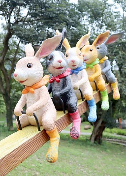
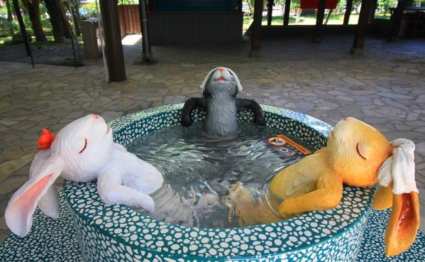

礁溪又有新景點！現在在礁溪轉運站旁，宜蘭縣政府打造了全新幾米兔子裝置藝術，沿著廊道就可以抵達礁溪溫泉公園，可以在這裡盡情拍可愛幾米兔子裝置藝術外，也可以泡腳休息，成為礁溪最新的療癒系景點。

從礁溪轉運站一下車往左走，就可以看到巨大的白色兔子入口意象，不只當作讓民眾進出溫泉公園的入口，也成為轉運站新亮點。沿著一旁的遮雨廊道，首先可以看到兩隻可愛的旅行兔兔，在草地上拖著行李箱向前方邁進，沿著走廊一路前行，就可以看到更多幾米兔子藝術裝置。
在綠色草地上，一群兔子坐著蹺蹺板玩耍，一旁則有各種顏色的兔子或坐在廊道旁牆上，或圍著樹子跳舞，也有揹著書包的小兔子站在矮牆上，與來往旅客打招呼。

由於這條遮雨廊道從轉運站一路延伸至礁溪溫泉公園，宜蘭縣政府特別在旁邊打造了兔子們泡湯意象，看灰色、白色與黃色兔子泡在溫泉池內，在額頭上放著毛巾，愜意邊泡湯邊沐浴在陽光之下。
在靠近礁溪溫泉公園入口處，也有幾隻大小兔子聚在一起站在樹蔭下，一起好奇的抬頭向上望，超萌模樣已經吸引許多路過民眾搶拍，近期計畫前往礁溪，千萬不能錯過這處最新幾米景點。
2020 Copyright © my website All rights reserved.